공동 컨설팅 케이스
병원 운영부터,
병원장님의 상속 준비까지
보험설계사가 관리하던 병원장 고객에
세무사와 노무사가 합류
사내근로복지기금과 가족법인,
나아가 상속 재원 마련까지 함께 입체적으로 검토한 공동 컨설팅
세무사·회계사·변호사·노무사 등 다양한 전문가들이 보험 컨설턴트와 한 팀으로
각 분야의 전문가들이 파트너로 함께합니다
기업, 대표, 그리고 자산가의 절세부터 승계까지
트리니티원은 전문직과 보험 컨설턴트가 함께
고객에게 맞는 해법을 제시합니다
이제, 당신의 전문성을 트리니티원에서
지금이 전문직의 골든타임
기장료는 몇 년째 그대로다. 아니, 솔직히 더 떨어졌다.
이제는 AI로 기장을 싸게 해 준다는 광고까지 나온다.
몇 년을 함께한 거래처 대표님이 전화를 주셨다. “세무사님은 왜 이런 컨설팅은 안 해 주세요?”
이제는 내 거래처를 지키기 위해서라도 컨설팅과 금융상품을 제대로 알아야 한다.
이대로는 안 되겠다.
고객과 쌓아온 신뢰와 전문성에,
트리니티원의 영업 역량과 파트너 네트워크를 더합니다
가업승계, 가족법인, 투자조합, 사내근로복지기금 + @
세무기장, 노무자문, 법률자문을 넘어,
고객에게 제안할 수 있는 대안이 더욱 다양해집니다
전문직 본업 소득에 더해,
내 전문성을 활용한 추가 수익의 기회까지
본업과 트리니티원에서 얻는 수익,
두 축을 통해 어제보다 여유로운 라이프를
기존 거래처를 넘어
법인 대표와 자산가 시장으로
보험 컨설턴트가 쌓아온 고객 기반에
내 전문성을 더합니다
공동 컨설팅 케이스
보험설계사가 관리하던 병원장 고객에
세무사와 노무사가 합류
사내근로복지기금과 가족법인,
나아가 상속 재원 마련까지 함께 입체적으로 검토한 공동 컨설팅
각 분야의 전문가들이 한 팀으로,
당신의 전문성이 더 큰 기회로 이어지도록
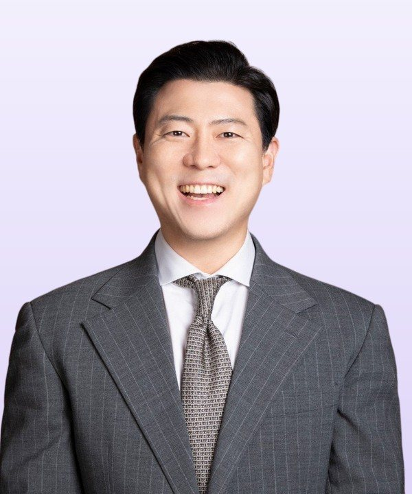
전문직 컨설턴트와 일반 설계사의 공동 케이스 누적
수백만원, 수천만원의 고액 계약 다수
“제 거래처에 누가 먼저 제안할까 봐 늘 불안했어요”
“이제는 가결산 자료 들고 제가 먼저 찾아가요”
대표님이 “기장하면서 왜 이런 얘기는 안 해주셨어요?” 하시면 정말 아찔하잖아요. 요즘은 제가 먼저 이것저것 챙겨서 말씀드려요. 기장만 맡기시던 대표님들이 이제 다른 것도 물어보세요.
“노무사는 문제가 터지고 나서야 찾으셨어요”
“지금은 회계사, 세무사님과 미리 원장님을 만나요”
4대보험이 너무 부담스러운 원장님이 계셨습니다. 세무는 세무사님이, 인사노무는 제가 맡았어요. 혼자 갔으면 제 분야 얘기밖에 못 했을 텐데, 같이 가니 원장님 질문이 끝이 없더라고요.
“거래처 늘리는 것 말고는 답이 없는 줄 알았어요”
“지금은 본업 말고 소득이 하나 더 있어요”
그 소득으로 사무실에 사람을 한 명 더 뽑았어요. 가족이랑 보내는 시간도 늘었고요. 여유가 생기니까 본업도 덜 쫓기면서 해요.
“회계사는 회계감사만 하는 줄 아는 대표님이 많았어요”
“요즘은 ‘회계사님이 이런 것도 하세요?’ 소리를 들어요”
트리니티원에서 배운 컨설팅 기법으로 가업승계나 법인전환 얘기를 먼저 꺼내요. 대표님 반응이 확실히 다르네요. 소개도 많이 시켜주시구요.
“변호사는 일이 터진 다음에 찾는 사람이었죠”
“이제는 일이 생기기 전에 대표님을 만나요”
가업승계나 상속 얘기로 미리 뵈니까 대화가 완전히 달라요. 자녀분 얘기, 회사를 어떻게 넘겨줄지 같은 고민을 대표님이 먼저 꺼내세요.
자격증 인플레이션, AI와 자동화, 그리고 온라인으로 격화되는 무한경쟁이제는 판이 바뀌었습니다
단순 금융상품이 아닌 법인 절세, 상속 영역을 두루 검토하는 설계사 증가. 세무·법률 전문가가 한 팀으로 붙는 패밀리오피스형 자문이 늘어나는 것도 같은 흐름
순자산 3,000만 달러 이상 서울의 초고액 자산가는 1년 사이 36.3% 증가
출처: 알트라타(Altrata), World Ultra Wealth Report 2026(2025년 기준)
쟁점을 아는 것과 고객 앞에서 풀어내는 것은 다릅니다
가업승계·가족법인·사내근로복지기금부터 법인전환과 퇴직금 컨설팅까지
트리니티원 세미나에서는 주요 쟁점은 물론, 실제 상담에서 어떻게 설명하고 풀어가는지 실무 노하우를 나눕니다
기업 대표와 컨설턴트, 나아가 세무사·회계사 등 전문직을 대상으로 강의하는 전문가들이 함께합니다. 트리니티원에서는 이들이 함께 고민하고 경험을 나누는 동료가 됩니다
주요 세미나 주제
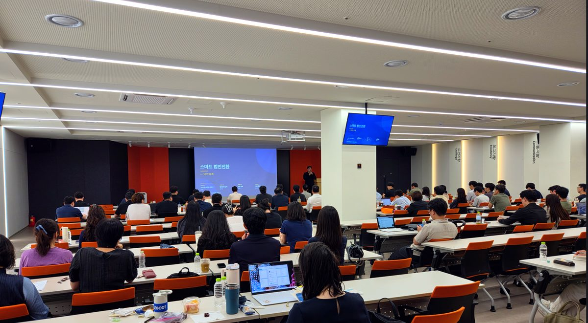
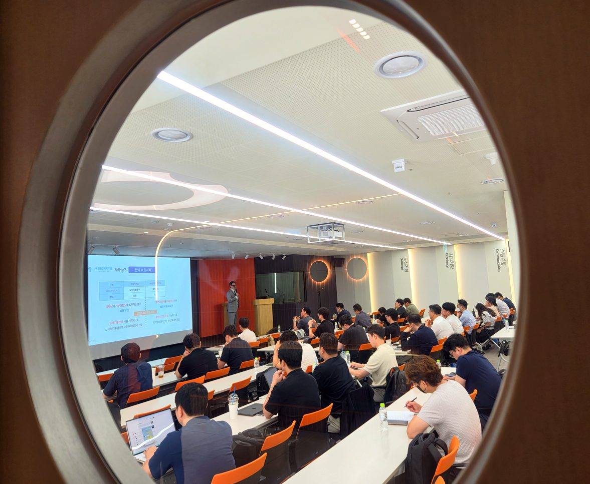
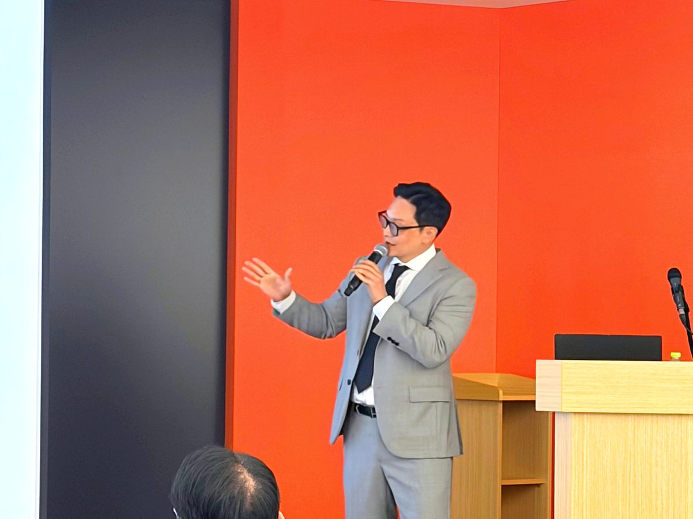
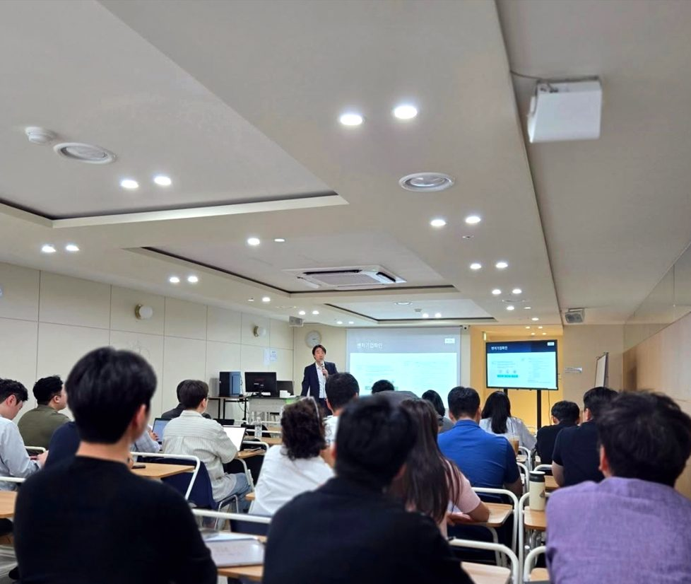
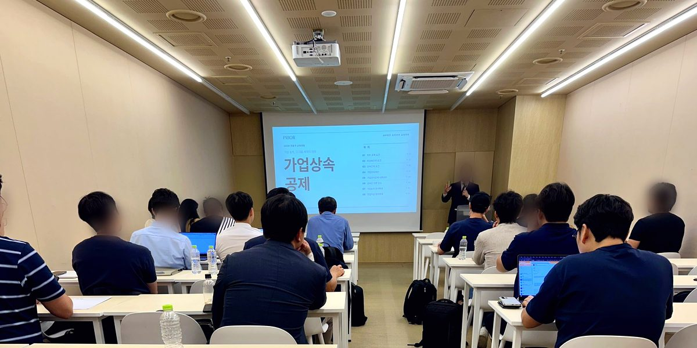
세미나 수강 설문에서
강의 중 가장 유익했던 내용
이 강의를 주변에 추천한다면 어떻게 소개하시겠어요?
트리니티원은 인카금융서비스 소속의 법인, 자산가 시장 전문 보험컨설팅 조직입니다. 법인 대표와 자산가의 경영·승계 과정에서의 이슈를 전문직과 보험 컨설턴트가 함께 검토하고, 고객 맞춤형 솔루션을 제안합니다
전문적인 판단을 고객이 이해할 수 있는 제안으로 전달하는 과정도 중요합니다. 트리니티원은 상담 화법부터 제안서 구성, 프레젠테이션까지 실전에 필요한 역량을 키울 수 있도록 지원합니다. 실제 고객을 만나는 자리에도 필요시 전문직 선배가 동행해 제안 설명과 질문 대응을 함께합니다
오래 쌓아온 신뢰가 있으니 더 신중할 수밖에 없죠. 그래서 고객에게 보험이 왜 필요한지부터 살펴봅니다. 경영자의 갑작스러운 부재에 대비하거나 상속세 납부 재원을 준비하는 등, 고객이 미처 챙기지 못한 문제에 보험을 활용할 수 있습니다
기존 거래처뿐 아니라 보험 컨설턴트가 관리하는 고객 중 내 전문성이 필요한 공동 컨설팅에도 참여합니다. 동료가 쌓아온 고객 관계에 나의 전문 지식을 더해 법인 대표와 자산가의 과제를 함께 해결합니다
처음에는 5일간의 트레이닝 과정을 통해 법인 컨설팅과 보험상품, 고객 제안의 기초를 익힙니다. 이후에는 정기 교육과 케이스 공유, 현장 동행으로 실무 경험을 쌓아 나갑니다. 실제 일정과 참여 범위, 본업 병행 시 고려할 사항은 커피챗에서 자세히 안내합니다
네, 함께할 수 있습니다. 직역마다 법인 대표와 자산가에게 건넬 수 있는 이야기가 다르기 때문이죠. 노무사는 사내근로복지기금 같은 컨설팅을, 변리사는 벤처투자와 투자조합을 활용한 컨설팅을, 변호사는 유언대용신탁 같은 차세대 승계 모델을 맡습니다. 여기에 세무사·회계사와 협업해 기존 거래처에 새로운 자문을 제안할 수도 있습니다
정상을 향한,
트리니티원 멤버십 전용 4단계 커리큘럼
법인 컨설팅의 주요 주제부터 상품 이해와 세일즈까지
고객에게 제안할 내용을 정리하고, 롤플레이로 실전 감각을 익힙니다
현장에서 마주한 케이스를 바탕으로
상품 설계와 고객별 세일즈 전략을 공유합니다
세법 개정과 시장 변화를 짚고,
주제별 케이스 스터디로 컨설팅의 깊이를 더합니다
상담 화법과 스피치, 프레젠테이션
제안은 더 정교하게, 설득은 더 날카롭게
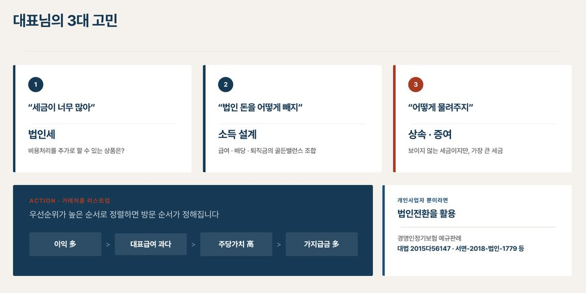
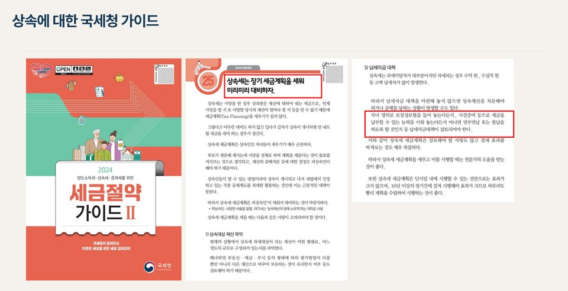
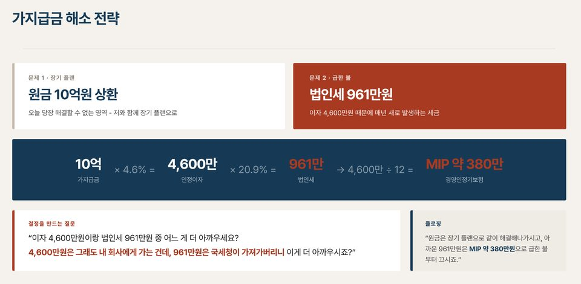
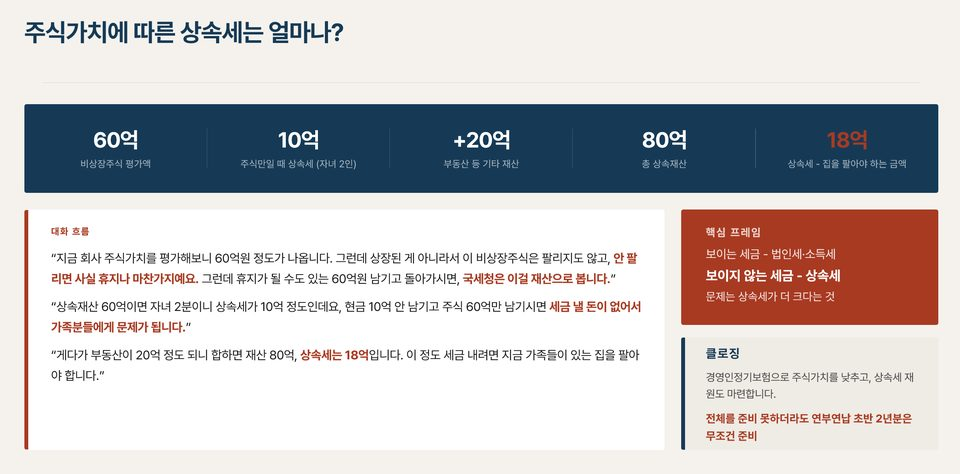
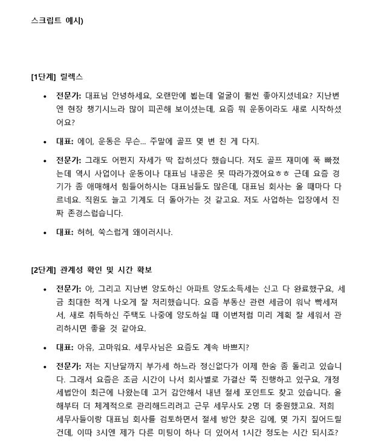
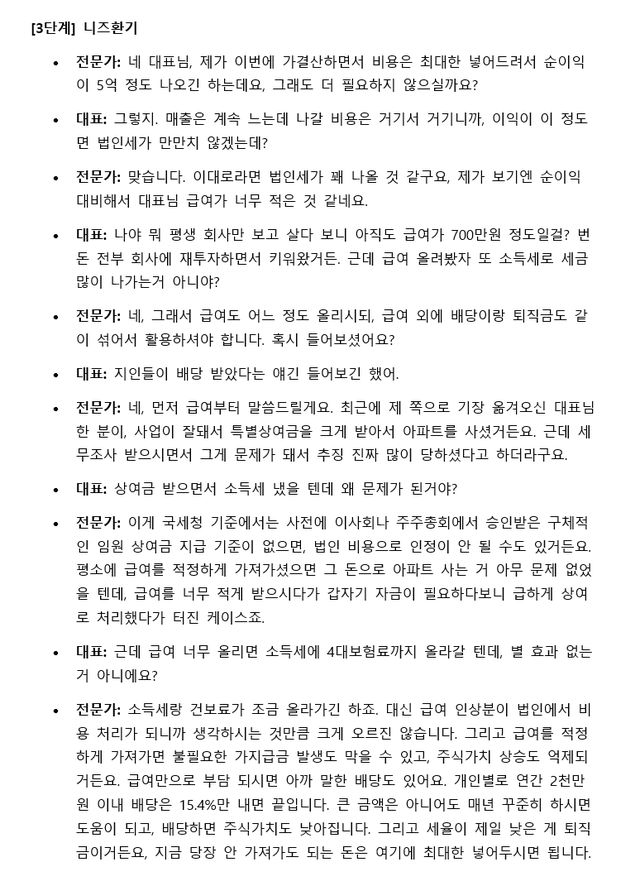
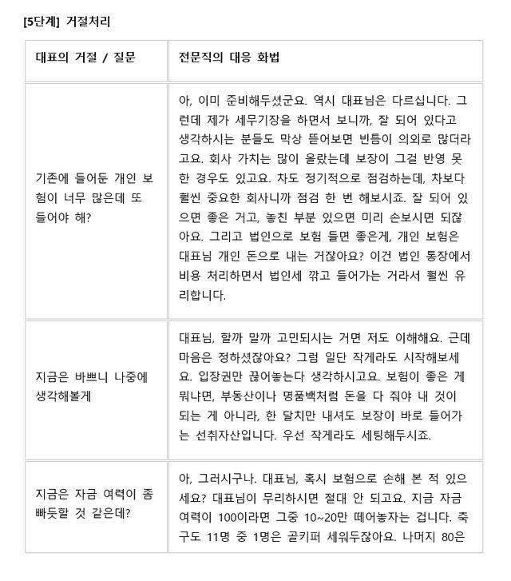
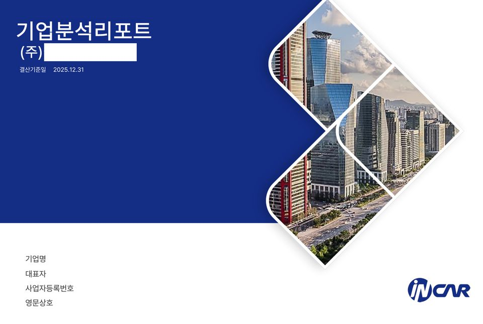
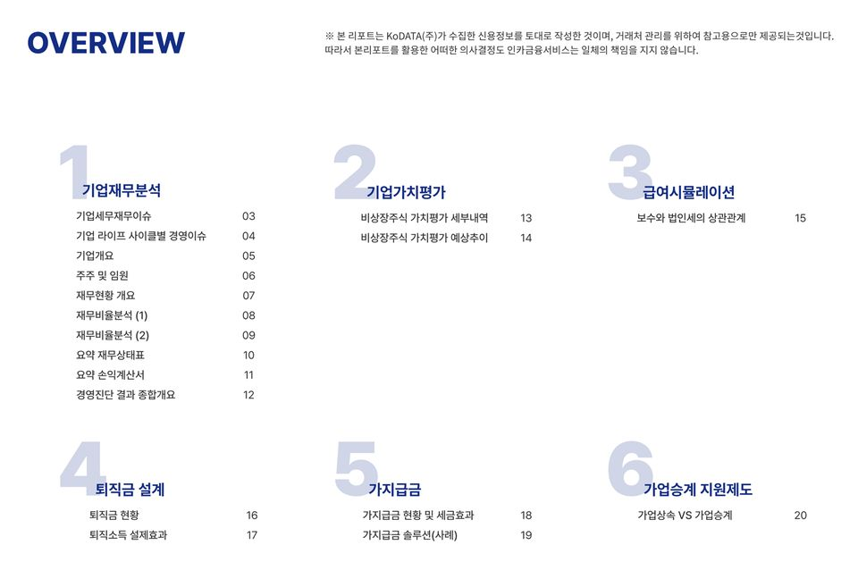
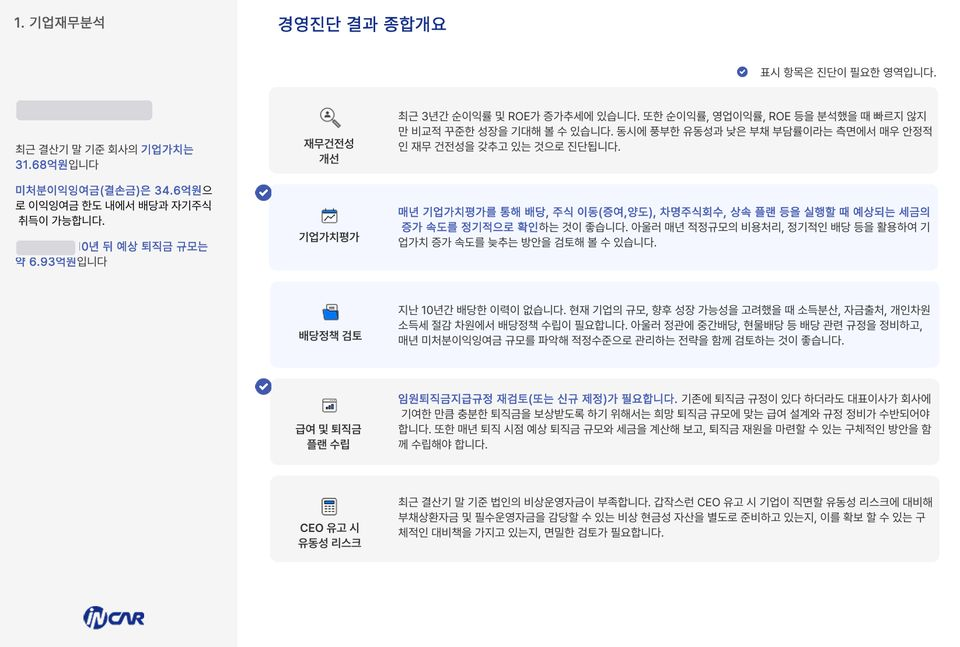
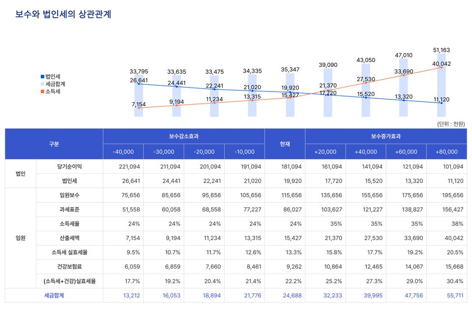
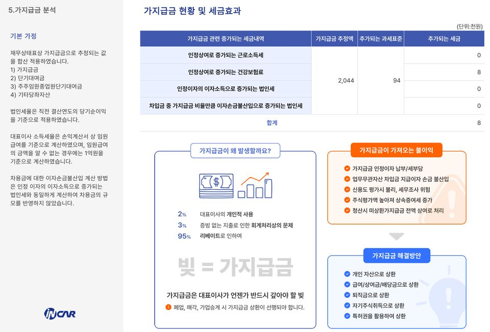
과거엔 혼자 뛰던 자리,
이제는 팀과 함께 현장으로
멤버십 = 트리니티원 지사에 위촉 형태로 합류하시면 됩니다
오늘 트리니티원 대표님, 단장님과 함께 거래처 미팅을 다녀왔습니다.
처음 해 보는 조인웍이라 긴장을 많이 했는데, 두 분께서 미팅을 잘 이끌어 주셔서 조만간 좋은 결과가 있으리라 기대하고 있습니다.
특히 거래처 앞에서 제 역할과 역량을 돋보이게 소개해 주셔서, 거래처와의 관계도 한층 좋아진 것 같아요.
이번을 시작으로 두 분께 많이 배워서, 저도 더 보탬이 되고 싶습니다.
오늘 대표님, 단장님과 함께 조인웍을 진행했습니다.
중간에 우여곡절이 있어 시간이 좀 걸렸지만, 두 분이 이끌어 주신 덕분에 9부 능선은 넘은 느낌입니다.
두 분의 상담 스킬과 고객사 대표님을 대하는 방식에서 또 많이 배운 하루였습니다.
나는 퍽이 있었던 곳이 아니라,
앞으로 갈 곳으로 움직인다